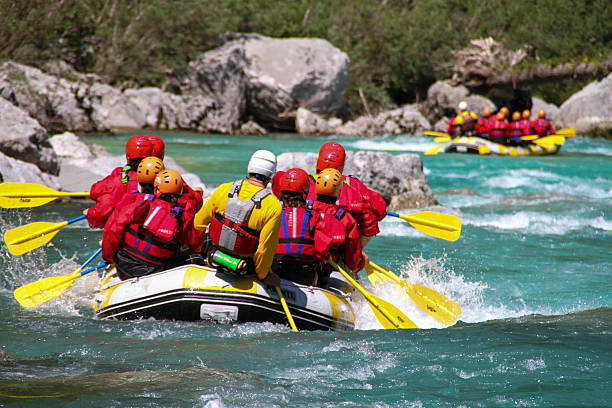
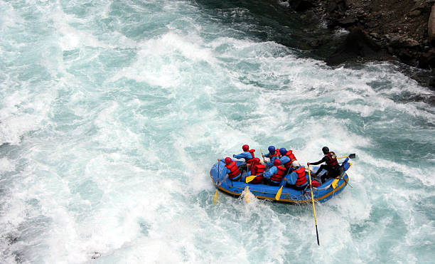

Our mission is to provide unforgettable white water rafting experiences that connect people with the raw power and beauty of nature. We believe that adventure brings out the best in everyone, fostering teamwork, courage, and a deep appreciation for our rivers. Every journey down the rapids is more than just a thrill—it's a chance to create lasting memories, challenge yourself, and experience the wilderness in its most exhilarating form.


Rapids & Rivers Adventures
History
Rapids & Rivers Adventures was founded in 1985 by a group of passionate river enthusiasts who wanted to share their love of white water rafting with the world. What started as a small operation with just two rafts and a dream has grown into one of the region's most trusted and respected rafting companies. Over the past four decades, we've guided thousands of adventurers through some of the most spectacular rapids in the country, always prioritizing safety, environmental stewardship, and pure, unadulterated fun. Our experienced guides have navigated these waters for generations, passing down their knowledge and respect for the river to each new team member.